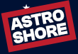

Descubre las personalidades
de los astros
Cada astro tiene su propia personalidad… ¡y mucho que contar! Conoce lo interesantes que son, observa cómo se mueven y descubre qué los hace únicos.
Pica sobre ellos para descubrir quiénes son, cómo están y qué historias tienen para ti. Si quieres ponerle ritmo al viaje, activa la música.
Los personajes de Astro Shore
Toca un planeta para conocerlo. Directo → · ← Retrógrado
- Dirección
- Velocidad aparente
Quién es
Cómo está
Cómo te afecta
Conclusión del proyecto
Astro Shore convierte datos de movimiento aparente en una experiencia visual, interactiva y cercana. Los planetas se presentan como personajes para que explorar sus cambios sea tan sencillo como conocer a alguien nuevo.
La animación, las imágenes, los textos y la música trabajan juntos para mostrar cómo el diseño puede hacer más comprensible y entretenida la información. Cada dirección tiene su propia expresión, y cada visita invita a observar algo distinto.
Los valores son simulados y las interpretaciones astrológicas se ofrecen como entretenimiento: este proyecto es una exploración creativa, no una medición astronómica ni una predicción personal.
Gracias por explorar este universo. ¡La órbita sigue!